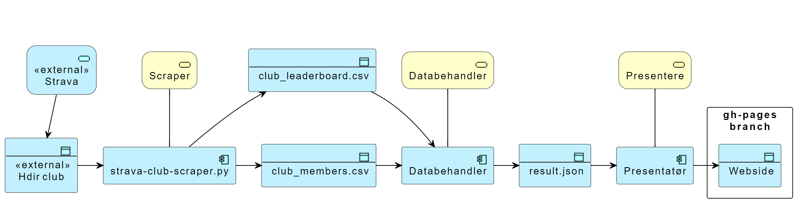

Helsedirektoratet Strava scraper
Script og actions for å hente resultater fra Helsedirektoratet sin stravaklubb og publisere dette som resultatlister i forbindelse med sykle til jobben aksjonen. Resultatene oppdateres tre ganger i døgnet (klokken 10.00, 17.00 og 23.00) og ligger på websiden.
Arkitektur

Komponenter
Konfigurasjon
Konfigurasjon på tvers av python scriptene legges i config.ini
Strava club scraper
- Trigger Scraper startes av et action script, planen er at dette skal kjøre omtrent en gang om dagen, men akkurat nå startes dette manuelt.
- Scraper applikasjonen er en fork av strava club scraper
- Forutsetter at det eksisterer en bruker som er medlem i Helsedirektoratet sin stravaklubb, passord og brukernavn ligger som hemmeligheter i repoet.
- Scraper koden er modifisert slik at output er csv filer istedenfor google sheets.
- Scraper koden er modifisert slik at python scriptet kjører feilfritt i en Github Action.
- Scraper koden er modifisert slik at brukernavn og passord ligger som hemmeligheter i repoet istedenfor som klartekst i config.ini.
- Resultatet fra skraping legges data\skrap
Databehandler
Tar de siste CSV filene fra scraper og produserer tre resultatlister som json. Trigger Nye eller oppdaterte CSV filer fra scraper. Kan muligens startes direkte fra samme script som scraper.
- En akkumulert resultatliste for en bestemt periode hvor resultatene for hele perioden akkumuleres.
- En linje pr. deltaker med: akkumulert tid, akkumuldert kilometer tilbakelagt, akkumulert antall aktiviteter, akkumulert høydemeter tilbakelagt,
lengste distanse for en økt og gjennomsnittshastighet.
- En linje pr. deltaker med: akkumulert tid, akkumuldert kilometer tilbakelagt, akkumulert antall aktiviteter, akkumulert høydemeter tilbakelagt,
- En resultatliste for den siste uken.
- Et akkumulert resultat for hele klubben i hele perioden.
- Json resultatet legges data\result
Presentatør
Tar Json filer fra databehandler og presenterer resultatlistene på en pen måte som html filer. Trigger Databehandleren startes av et script.
Resultatet legges på gh-pages branch for visning på github.io.